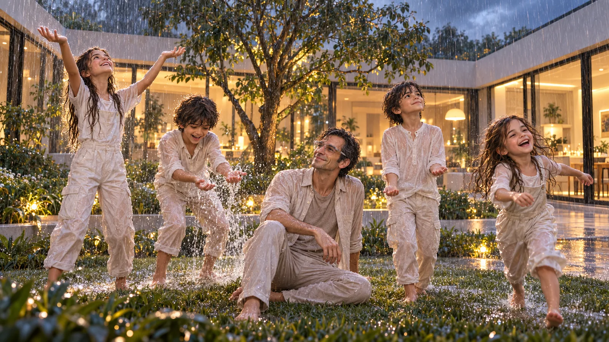

O Céu cai devagar.
“Pela primeira vez em muito tempo, não queria resolver nada.”

A chuva era um fenômeno raro o bastante para ser noticiado.
Quando as primeiras gotas deslizaram pelo vidro da janela, Zee se levantou e decidiu desativar o campo de proteção da casa. O sistema protestou — “Condensação excessiva detectada” —, mas ele ignorou.
Saiu.
A chuva o atingiu no mesmo instante. Não era uma tempestade, mas uma visita: delicada, precisa, inesperada.
As gotas desenhavam rotas sobre seu rosto, invadiam o tecido da roupa, deslizavam pelo cabelo grisalho. Na rua, os transeuntes corriam, abaixavam a cabeça, ativavam barreiras pessoais invisíveis.
Zee levantou o queixo para o céu.
Por um longo minuto — talvez dois — ficou assim, imóvel, olhos semicerrados, ouvidos abertos para aquele som esquecido.
Reya o observava pela janela, dividida entre o susto e a ternura.
Então, uma risada infantil rompeu o silêncio da casa.
Maya saiu primeiro, seguida por Kauê, Aru, e a pequena Amora. Nenhum deles sabia o que era se molhar de verdade.
A hesitação durou segundos: depois disso, correram para o quintal, escorregando na grama encharcada, gritando a cada relâmpago que tecia o céu em fios brancos.
Zee assistiu apenas, um desenho de alegria que ele não saberia mais criar.
Reya, instintivamente, desligou a música ambiente — pela primeira vez, o som real bastava.
Maya levantava as mãos, tentando “recolher o arco-íris”; Kauê disputava quem produzia o maior espirro de água; Aru, quieto, sorria; Amora ria até soluçar.
Zee, agora sentado na relva encharcada, observava.
Sentia a roupa pesar, o corpo vibrar. E, pela primeira vez em muito tempo, não queria resolver nada.